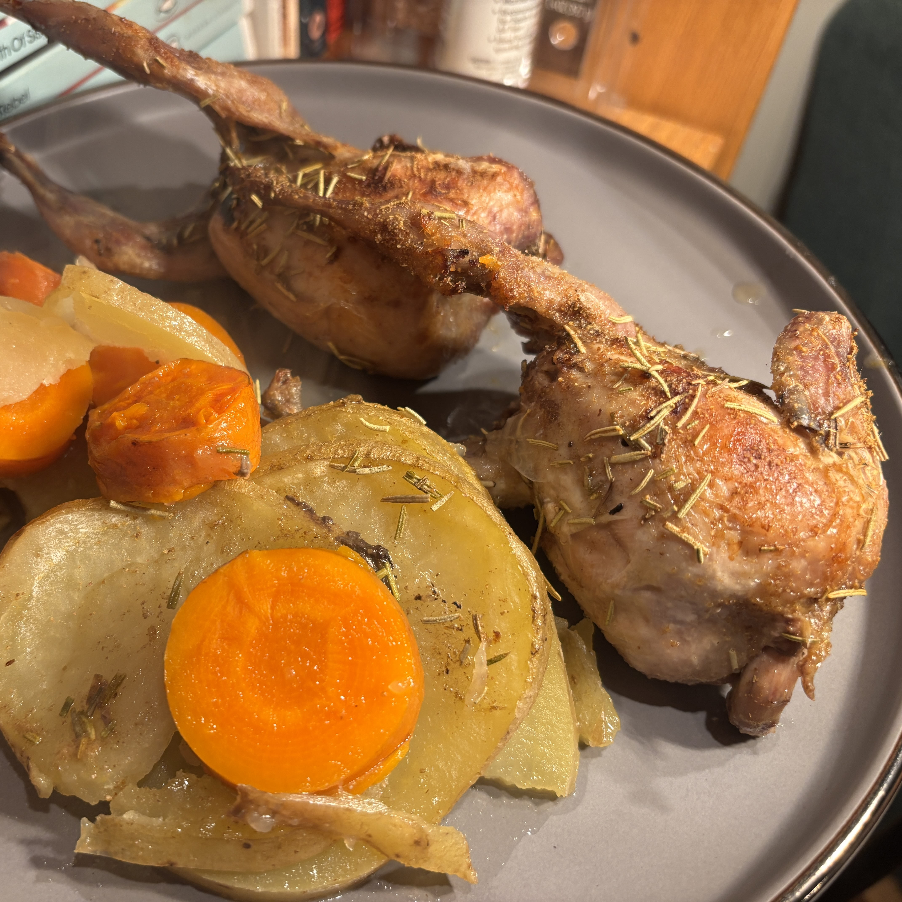
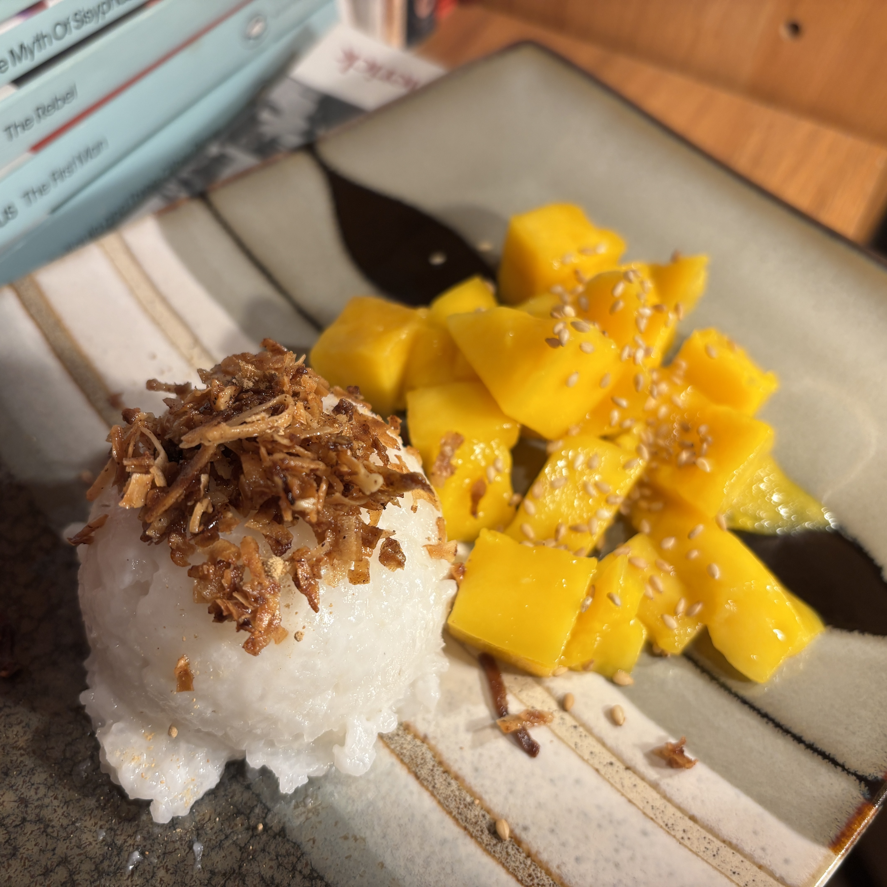

In yet another boundary defining meal, Oliver tested our friendship by serving a platter of roasted quails. While the appearance was nothing short of striking, everyone agreed that the quails were delicious. Drizzled with olive oil, salted and topped with rosemary, the little "peepers" as the chef likes to call them were roasted in the oven atop a bed of root vegetables braising in chicken broth. The result was a tender and flavorful meal that was unlike anything we've ever had before.

A Thai classic, Will and Julie's mango sticky rice was dense, satisfying and satiating. The sticky rice was perfectly cooked and the chef's decision to reduce the sugar led to a more balanced dish. The mangoes were suprisingly ripe and juicy, and the toasted coconut was a nice visual touch to bring together a lovely combination of flavors and textures.
